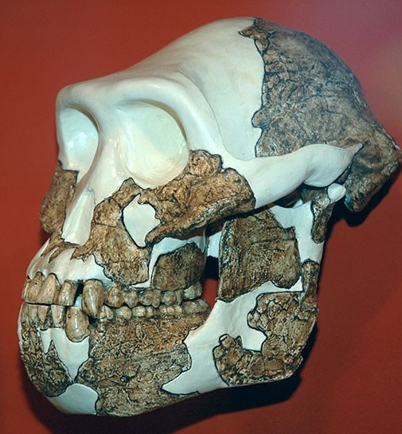

Dr. Tim D. White and his Middle Awash research team decided on the classification of Ar. ramidus as a whole new species based on solely dentition at first.
What were some of the things that allowed his team to make this classification?
The overall appearance of Ar. ramidus molars are more similar to the chimpanzees of today than to molars of more recently fossilized hominins (like Lucy).
Decidious first molar comparisons... show a wide separation between the dm1 of Aramis and those of other early hominid species.
a, Dryopithecus; b, Pan paniscus; c, Pan troglodytes; d, Australopithecus ramidus (APA-VP-1/129); e, A. afarensis (Lucy); f, A. africanus (Tuang); g, A. robustus; h, A. boisei; i, Homo sapiens (modern).
Both the distal and buccal (inside and outside) edges of the molars are bowl-shaped.
The molars have less enamel thickness than chimpanzees, but more than Australopiths. The thickness suggests two things: that Ar. ramidus is an intermediary between chimpanzees and other pre-human hominids, and that their diets included softer foods than chimpanees.
Additionally, Ar. ramidus has a flatter jaw attatchment point, or articular eminence than chimpanzees. This, again, implies they ate softer foods than modern chimps, as modern chimps need more muscle for chewing rougher foods.

Model A. afarensis(Lucy) jaw.
3D model of Ardipithecus ramidus jaw.

Model modern chimpanzee jaw.
The shape of Ar. ramidus's jaw is between the chimp and Australopith shape, with a move from a V-shape to a U-shape.
The molars are large like chimps, with buccal asymmetry somehwere betweens chimps and Australopiths.
Model Ardipithecus ramidus head. Notice the direction the incisors point in is most aligned with the pre-molars.
Model Australopithecus afarensis (Lucy) head.
The incisoral size is between a chimp and Australopith.
Ar. ramidus has larger canines than Australopiths, including A. afarensis.
The canines are more in line with the pre-molars, which is different from A. afarensis, whose canines are more rotated mesiodistally (with the inside edge of the canine towards the tongue) [See above photos].
This feature is found in “more primitive” apes according to Dr. Tim D. White, and suggests that the canine was not incorporated into the function of the incisors in Ardi.
The canines have a different thickness than both chimpanzees and Australopiths.
Dr. Tim D. White, Gen Suwa, and other researchers propose that canine sexual dimorphism was human-like.
Next up: Ar. ramidus's skull.